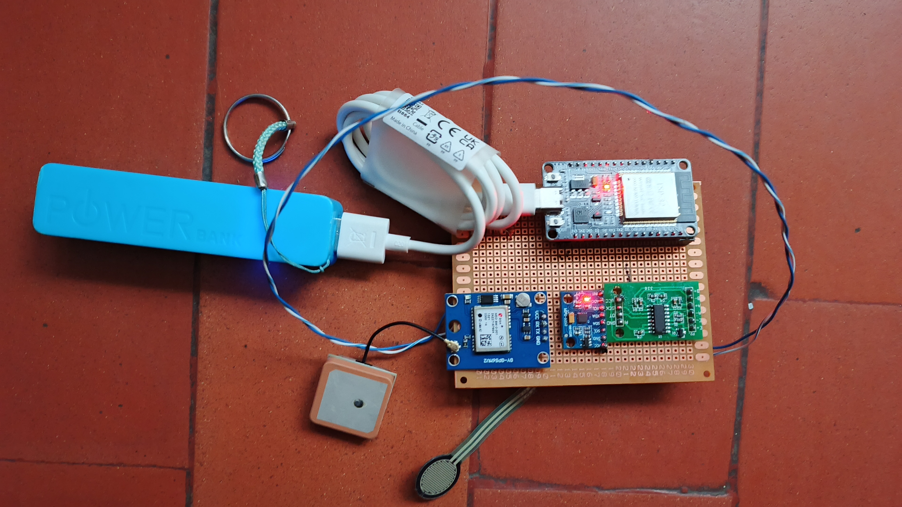
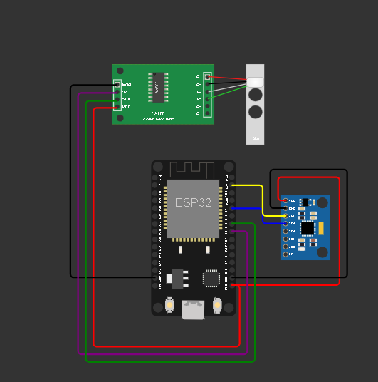
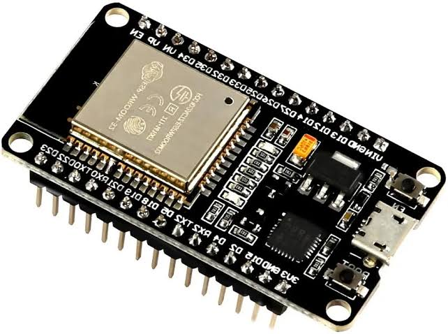
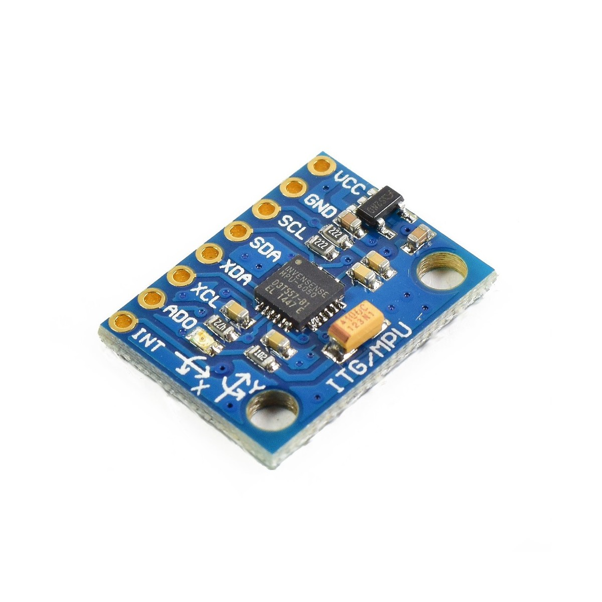
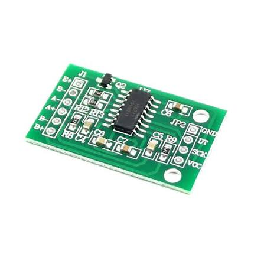
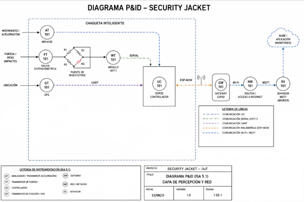
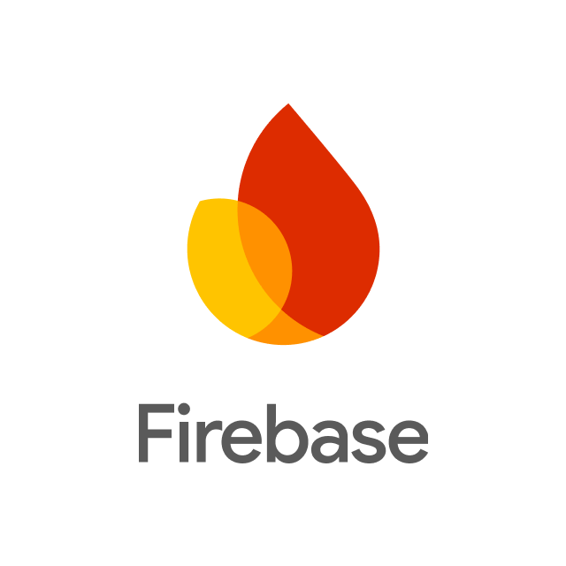

OBJETIVOS
Especificos
Objetivo Especifico # 1 & 2
1. Diseñar la arquitectura electrónica de Security Jacket mediante la integración del ESP32
con los sensores destinados a la adquisición de variables de movimiento, fuerza y ubicación.
2.Implementar el sistema de medición de fuerza, utilizando una galga extensiométrica,
un puente de Wheatstone y el módulo HX711.
Objetivo Especifico # 3 & 4
3. Realizar una calibración preliminar de la medición de fuerza,
mediante la aplicación de valores conocidos y el registro de las lecturas
obtenidas por el sistema.
4. Diseñar la arquitectura de comunicación IIoT, considerando ESP-NOW,
Wi-Fi y MQTT como mecanismos para transportar la información generada por el sistema.
Objetivo Especifico # 5
5. Realizar posteriormente la calibración de la galga extensiométrica mediante valores conocidos, con el fin de establecer una relación entre la magnitud aplicada y la señal obtenida por el sistema
Objetivo Especifico # 6
6. Diseñar la estructura de almacenamiento de datos en Firebase Realtime Database, incluyendo variables de sensores, estado del sistema, configuración e información registrada del usuario.
Audiovisuales
Material Audiovisual de Security Jacket
Promocional 5to Trimestre
El video introductorio al proyecto Security Jacket correspondiente al quinto semestre, cuenta con venta al publico del proyecto
Promocional 4to Trimestre
El video introductorio al proyecto Security Jacket correspondiente al cuarto semestre, cuenta con la narración correspondiente a los integrantes del equipo y planteamiento de forma resumida del proyecto.
Prototipo presentable para 5to Semestre
Panteamiento
Avance de 5to Semestre
En esta fase del proyecto se llevó a cabo la integración del sistema electrónico avanzado y la transmisión
inalámbrica de datos de la chaqueta. En primer lugar, se acondicionó el espacio interno para ubicar la
tarjeta ESP32, conectada al acelerómetro MPU6050 para la detección de impactos, al módulo HX711 junto a
la celda de carga para medir la fuerza aplicada, y al módulo GPS NEO-6M para el posicionamiento geográfico
en tiempo real, asegurando que todos los circuitos quedaran protegidos y firmes dentro de la estructura textil.
La tarjeta ESP32 incorpora un código optimizado que procesa las lecturas de los sensores y las coordenadas del
GPS, las estructura en formato JSON y realiza envíos automáticos mediante peticiones HTTP seguras hacia la
base de datos en la nube de Firebase Realtime Database. Esto permite almacenar la información de los eventos y
la ubicación exacta de forma instantánea, facilitando su visualización en un dashboard de monitoreo web para
los servicios de emergencia o seguimiento, tal como se muestra en la siguiente imagen.
Esta arquitectura robusta consolida una comunicación estable, segura y fluida entre el hardware distribuido en
la chaqueta y la plataforma en la nube, permitiendo una respuesta integral ante cualquier eventualidad en
carretera.


Sensores fundamentales
Acelerómetro MPU6050: Es el sensor inercial encargado de medir la aceleración lineal en los tres ejes espaciales ($X, Y, Z$). Su función principal en el sistema es detectar movimientos bruscos, caídas, impactos o colisiones en tiempo real para activar el estado de alerta
Celda de carga con módulo HX711: Funciona como un sistema de medición de fuerza mediante una galga extensiométrica. Su propósito es registrar la tensión, presión o fuerza aplicada sobre la estructura textil de la chaqueta, permitiendo identificar golpes directos o compresión.
Módulo GPS NEO-6M: Es el encargado de captar las señales de los satélites para obtener las coordenadas geográficas de posición. Su función dentro del sistema es proporcionar la latitud y longitud en tiempo real para que, en caso de un impacto o emergencia, se conozca la ubicación exacta del usuario.
Tarjeta ESP32: Es el microcontrolador principal y el cerebro del sistema. Se encarga de leer constantemente los datos de todos los sensores anteriores, procesarlos, estructurarlos en formato JSON y transmitirlos de forma inalámbrica mediante la red Wi-Fi hacia la base de datos y el dashboard de monitoreo web




Arquitectura IoT y Capas de Comunicación
El sistema Security Jacket se estructura mediante una arquitectura IoT robusta que permite integrar la adquisición de información, el procesamiento local, la comunicación inalámbrica y el almacenamiento de datos en la nube.
- Capa de Percepción Corresponde a la adquisición de datos del entorno y del estado del motociclista a través de los sensores integrados en la chaqueta: MPU6050, Celda de carga modificada + Puente de Wheatstone + HX711, Módulo GPS, Interfaces de conexión.
- Capa de Procesamiento (Edge Computing) En esta capa se encuentra la tarjeta ESP32, encargada de centralizar la lectura y el procesamiento local de las señales provenientes de todos los sensores. El microcontrolador analiza los valores de aceleración y fuerza, identifica condiciones críticas asociadas a un posible accidente y prepara la información estructurada para su posterior transmisión.
- Capa de Red Esta capa facilita la comunicación inalámbrica entre los dispositivos de campo y el nodo central de la red. Se plantea el uso del protocolo ESP-NOW, el cual permite establecer enlaces directos y de alta velocidad entre dispositivos ESP32 sin depender obligatoriamente de un enrutador Wi-Fi tradicional.
- Capa de Transporte y Servicios Gestiona el flujo de datos hacia Internet y los servidores externos. Se emplea conectividad Wi-Fi junto con el protocolo de mensajería MQTT, el cual resulta altamente eficiente gracias a su modelo de publicación/suscripción, permitiendo el envío ágil de eventos y variables del sistema hacia un broker central.
- Capa de Aplicación Corresponde a los servicios finales orientados al almacenamiento, consulta y visualización de la información. El sistema utiliza Firebase Realtime Database para albergar de manera centralizada las lecturas en la nube, permitiendo consultar los datos del usuario y del estado de la chaqueta en tiempo real a través de una interfaz web de monitoreo accesible para los servicios de emergencia.
Diagrama Electronico Security Jacket

Diagrama P&ID Para SECURITY JACKET

Trabajo con Firebase
Migración a la Nube (Adiós a XAMPP): Se eliminó la arquitectura local basada en PHP y XAMPP, reemplazándola por Firebase Realtime Database para que la tarjeta ESP32 se comunique de forma directa, estable y segura con la nube mediante la API REST.
Definición de la Ruta de Datos (FIREBASE_PATH): Se estableció una estructura de directorios virtuales en formato JSON dentro de la base de datos (por ejemplo, /project/sensores/lecturaActual.json) para que los datos de la chaqueta se almacenen y se actualicen en tiempo real.
Autenticación Anónima Segura: Se implementó un sistema de inicio de sesión anónimo utilizando la API de Google (identitytoolkit.googleapis.com), permitiendo a la ESP32 obtener credenciales temporales (idToken y refreshToken) necesarias para autorizar las peticiones HTTPS.
Configuración de Reglas de Acceso: Se ajustaron las reglas en la consola de Firebase Realtime Database para permitir operaciones de lectura y escritura durante la fase de pruebas del prototipo.
Envío Periódico de Datos: Se programó la tarjeta ESP32 para empaquetar las lecturas de los sensores (como el acelerómetro MPU6050 y la celda de carga HX711) en formato JSON y enviarlas automáticamente cada pocos segundos mediante peticiones PUT seguras hacia la nube

Tecnologia a usar
Dcumentación
5to Semestre
Documento íntegro Security Jacket
Información detallada

Matriz de Riesgos
Información detallada sobre la matriz
EQUIPO DE SECURITY JACKET
Integrantes del Proyecto
JHON JAIRO BRANGO VELASQUEZ
JHON JAIRO BRANGO VELASQUEZ
Integrante # 1
Estudiante de Tecnologia de Automatización Industrial
ARIAN JESUS DUARTE AVILA
ARIAN JESUS DUARTE AVILA
Integrante # 2
Estudiante de Tecnologia de Automatización Industrial
DAVID PAEZ MARTINEZ
DAVID PAEZ MARTINEZ
Integrante # 3
Estudiante de Tecnologia de Automatización Industrial
Codigo Prototipo 5to Semestre
desarrollado en Arduino IDE
// ENTRADAS
#include "WiFi.h"
#include "WiFiClientSecure.h"
#include "HTTPClient.h"
#include "ArduinoJson.h"
#include "Wire.h"
#include "Adafruit_MPU6050.h"
#include "Adafruit_Sensor.h"
#include "HX711.h"
#include "TinyGPS++.h"
// 1. CONFIGURACIÓN WIFI
#define WIFI_SSID "xxxxxxxx"
#define WIFI_PASSWORD "xxxxxxxx"
// 2. CONFIGURACIÓN FIREBASE (API REST)
#define API_KEY "xxxxxxxxxxxxxxxxxxxxxxxxxxxxxxxxxxxxx"
#define DATABASE_URL "https://security-jacket-pt-default-rtdb.firebaseio.com"
#define FIREBASE_SIGNUP_URL "https://identitytoolkit.googleapis.com/v1/accounts:signUp?key="
#define FIREBASE_REFRESH_URL "https://securetoken.googleapis.com/v1/token?key="
#define FIREBASE_PATH "/project/sensores/lecturaActual.json"
// 3. CONFIGURACIÓN DE PINES
#define HX711_DOUT 5
#define HX711_SCK 18
#define GPS_RX 16
#define GPS_TX 17
// 4. OBJETOS Y VARIABLES GLOBALES
Adafruit_MPU6050 mpu;
HX711 scale;
TinyGPSPlus gps;
float accX = 0.0, accY = 0.0, accZ = 0.0;
float fuerza = 0.0;
float latitud = 0.0, longitud = 0.0;
// Umbral de fuerza (Ajustado para los valores en miles del HX711)
const float UMBRAL_FUERZA = 50000.0;
bool alertaImpacto = false;
// Variables de autenticación anónima en Firebase
String idToken = "";
String refreshToken = "";
unsigned long proximaRenovacion = 0;
bool firebaseAutenticado = false;
// 5. CONEXIÓN WIFI
void conectarWiFi() {
Serial.println();
Serial.print("Conectando a Wi-Fi: ");
Serial.println(WIFI_SSID);
WiFi.mode(WIFI_STA);
WiFi.begin(WIFI_SSID, WIFI_PASSWORD);
unsigned long inicio = millis();
while (WiFi.status() != WL_CONNECTED && millis() - inicio < 20000) {
delay(500);
Serial.print(".");
}
Serial.println();
if (WiFi.status() == WL_CONNECTED) {
Serial.println("Wi-Fi conectado.");
Serial.print("Dirección IP: ");
Serial.println(WiFi.localIP());
} else {
Serial.println("No fue posible conectar a Wi-Fi.");
}
}
// 6. AUTENTICACIÓN ANÓNIMA EN FIREBASE
bool autenticarFirebase() {
if (WiFi.status() != WL_CONNECTED) return false;
WiFiClientSecure clienteSSL;
clienteSSL.setInsecure(); // Omitir verificación de certificado para pruebas
HTTPClient https;
String url = String(FIREBASE_SIGNUP_URL) + API_KEY;
if (!https.begin(clienteSSL, url)) return false;
https.addHeader("Content-Type", "application/json");
String cuerpo = "{\"returnSecureToken\":true}";
int codigoHTTP = https.POST(cuerpo);
String respuesta = https.getString();
https.end();
if (codigoHTTP != 200) {
Serial.print("Error autenticando Firebase. HTTP: ");
Serial.println(codigoHTTP);
return false;
}
DynamicJsonDocument doc(4096);
if (deserializeJson(doc, respuesta)) return false;
idToken = doc["idToken"].as();
refreshToken = doc["refreshToken"].as();
String duracion = doc["expiresIn"].as();
if (idToken.length() == 0 || refreshToken.length() == 0) return false;
unsigned long segundos = duracion.toInt();
if (segundos == 0) segundos = 3600;
proximaRenovacion = millis() + (segundos - 120) * 1000UL;
firebaseAutenticado = true;
Serial.println("Autenticación anónima en Firebase exitosa.");
return true;
}
// 7. ENVIAR DATOS A FIREBASE (API REST)
bool enviarDatosFirebase() {
if (WiFi.status() != WL_CONNECTED || !firebaseAutenticado) return false;
WiFiClientSecure clienteSSL;
clienteSSL.setInsecure();
HTTPClient https;
String url = String(DATABASE_URL) + FIREBASE_PATH + "?auth=" + idToken;
if (!https.begin(clienteSSL, url)) return false;
https.addHeader("Content-Type", "application/json");
DynamicJsonDocument doc(1024);
doc["fuerza"] = fuerza;
doc["aceleracionX"] = accX;
doc["aceleracionY"] = accY;
doc["aceleracionZ"] = accZ;
doc["alertaImpacto"] = alertaImpacto ? "¡SI!" : "Normal";
if (gps.location.isValid()) {
doc["latitud"] = latitud;
doc["longitud"] = longitud;
} else {
doc["latitud"] = 0.0;
doc["longitud"] = 0.0;
}
doc["tiempoMillis"] = millis();
String datosJSON;
serializeJson(doc, datosJSON);
int codigoHTTP = https.PUT(datosJSON);
https.end();
if (codigoHTTP == 200) {
Serial.println("Datos y GPS enviados correctamente a Firebase vía REST.");
return true;
} else {
Serial.print("Error enviando datos. HTTP: ");
Serial.println(codigoHTTP);
if (codigoHTTP == 401 || codigoHTTP == 403) {
firebaseAutenticado = false;
autenticarFirebase();
}
return false;
}
}
// 8. SETUP
void setup() {
Serial.begin(115200);
Wire.begin(21, 22); // I2C para MPU6050
conectarWiFi();
autenticarFirebase();
// Inicializar MPU6050 de forma segura
if (!mpu.begin()) {
Serial.println("¡Advertencia: No se encontró el MPU6050! Continuando...");
} else {
Serial.println("MPU6050 inicializado correctamente.");
}
scale.begin(HX711_DOUT, HX711_SCK);
scale.tare(); // Pone la balanza en cero automáticamente al encender
Serial.println("HX711 inicializado y tarado a 0.");
// Inicializar HX711 (Sin tare() para evitar que se congele en el arranque)
scale.begin(HX711_DOUT, HX711_SCK);
// Inicializar GPS en Serial2
Serial2.begin(9600, SERIAL_8N1, GPS_RX, GPS_TX);
Serial.println("GPS NEO-6M inicializado en Serial2.");
Serial.println("--- Sistema cargado exitosamente. Iniciando Lecturas ---");
}
// 9. LOOP
// =====================================================
void loop() {
// Procesar continuamente los datos del GPS
while (Serial2.available() > 0) {
gps.encode(Serial2.read());
}
// Leer MPU6050
sensors_event_t aceleracion, g, temp;
mpu.getEvent(&aceleracion, &g, &temp);
accX = aceleracion.acceleration.x;
accY = aceleracion.acceleration.y;
accZ = aceleracion.acceleration.z;
// Leer HX711 (multiplicado por -1 para invertir signo negativo al presionar)
if (scale.is_ready()) {
// abs() elimina los signos negativos y deja siempre el número en positivo
fuerza = abs(scale.get_units(5));
}
// --- LA ALERTA SE DISPARA EXCLUSIVAMENTE CON LA GALGA ---
alertaImpacto = (fuerza > UMBRAL_FUERZA);
// Obtener coordenadas si el GPS tiene señal válida
if (gps.location.isValid()) {
latitud = gps.location.lat();
longitud = gps.location.lng();
}
// Imprimir lecturas completas en el Monitor Serie
Serial.print("AccX: "); Serial.print(accX);
Serial.print(" | AccY: "); Serial.print(accY);
Serial.print(" | AccZ: "); Serial.print(accZ);
Serial.print(" | Fuerza: "); Serial.print(fuerza);
Serial.print(" | Alerta: "); Serial.println(alertaImpacto ? "¡SI!" : "Normal");
if (gps.location.isValid()) {
Serial.print("GPS -> Lat: "); Serial.print(latitud, 6);
Serial.print(" | Lng: "); Serial.println(longitud, 6);
} else {
Serial.println("GPS buscando satélites...");
}
// Renovar token si está por expirar
if (millis() > proximaRenovacion) {
autenticarFirebase();
}
// Enviar a Firebase
enviarDatosFirebase();
delay(1000); // Envío continuo cada 1 segundo
}